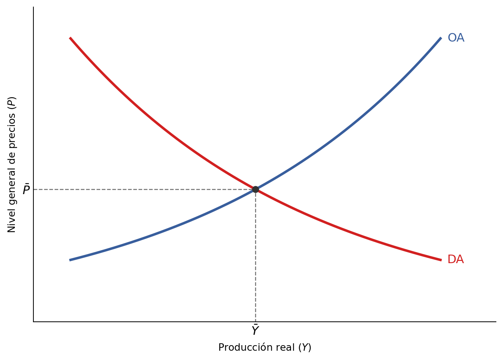

8 Ciclo y política fiscal
8.1 El sistema macroeconómico agregado
8.1.1 Demanda agregada y oferta agregada
En anteriores capítulos dedicados a la microeconomía, analizábamos el caso de mercados concretos. Un mercado estaba formado por compradores y vendedores y por sus correspondientes curvas de demanda y de oferta, a partir de las cuales se determinan la cantidad comprada y vendida y el precio de equilibrio al que dicha cantidad se compra y se vende en el mercado.
Ya hemos visto que, a nivel macroeconómico, no cabe hablar de la cantidad de producción de un bien concreto ni del precio al que se intercambia dicho bien, sino de un nivel general de producción, o producción agregada, y un nivel general de precios. Ya sabemos que el principal indicador para medir la producción agregada es el PIB, y que existen dos vías fundamentales para medir el nivel general de precios: el IPC y el deflactor del PIB.
Pues bien, de forma análoga a lo estudiado en la parte dedicada a la microeconomía, es posible relacionar la cantidad de producción agregada que los productores están dispuestos a vender y los consumidores están dispuestos comprar para cada nivel general de precios. Esas relaciones se plasman en la curva de oferta agregada y la curva de demanda agregada, que conforman el sistema macroeconómico agregado.
En la Figura 8.1, que representa formalmente este sistema macroeconómico, el eje horizontal muestra el nivel de producción agregada real de un territorio, medido a precios constantes, que denotaremos con \(Y\), mientras que el eje vertical muestra el nivel general de precios, que denotaremos con \(P\). La curva de demanda agregada se representa con pendiente negativa: lo que están dispuestos a gastar los agentes económicos en bienes y servicios disminuye al aumentar el nivel general de precios. Por su parte, la curva de oferta agregada se representa con pendiente positiva: las empresas están dispuestas a generar un mayor volumen de producción al incrementarse el nivel general de precios. Todo el análisis que se presenta a continuación se refiere al corto plazo.
8.1.2 El equilibrio macroeconómico
Del mismo modo que el mercado de un bien concreto tiende al nivel de producción y al precio determinados por la intersección de las curvas de oferta y de demanda de dicho bien, fuerzas análogas actúan en el sistema macroeconómico: este tenderá al nivel de producción agregada y al nivel general de precios determinados por la intersección de las curvas de oferta agregada y de demanda agregada. Si las curvas de oferta agregada o demanda agregada se desplazan, la producción agregada real \((\bar{Y})\) y el nivel general de precios \((\bar{P})\) de equilibrio cambiarán.
Cuando el nivel de producción agregada aumenta, estamos ante un caso de expansión. Cuando el nivel de producción agregada disminuye, estamos ante una recesión. Las sucesiones de expansiones y recesiones que se observan en las economías industrializadas se denominan ciclos económicos o fluctuaciones económicas.
Dado que los ciclos económicos pueden ser debidos a un comportamiento inestable de la curva de demanda agregada o de la curva de oferta agregada, es habitual distinguir entre ciclos de demanda y ciclos de oferta. Un ciclo de demanda se produce cuando la curva de oferta agregada mantiene cierta estabilidad, mientras que la curva de demanda agregada muestra desplazamientos oscilantes a derecha e izquierda. Un ciclo de oferta se produce cuando la curva de demanda agregada mantiene cierta estabilidad, mientras que la curva de oferta agregada muestra desplazamientos oscilantes a derecha e izquierda.
Nuestro principal objetivo en este capítulo es valorar si es posible que el Estado pueda influir en el ciclo económico a través de su política fiscal; esto es, a través de variaciones en el gasto público y en los impuestos. Dado que las variaciones en el nivel de producción agregada solo pueden darse como consecuencia de desplazamientos de las curvas de oferta agregada y de demanda agregada, la acción del Estado debe canalizarse por alguna de estas vías. Nos centraremos en el lado de la demanda y veremos si el Estado puede desplazar la curva de demanda agregada para influir en el nivel de producción agregada de equilibrio.
8.2 La demanda agregada
La demanda agregada \((DA)\) está constituida por el gasto total (agregado) que todos los agentes económicos están dispuestos a realizar en la compra de los bienes y servicios producidos en un territorio. Es habitual dividir este gasto en distintos componentes en función del tipo de agente económico que realiza el gasto. Esta descomposición nos servirá para identificar el papel que puede jugar el Estado.
8.2.1 Componentes de la demanda agregada
Al estudiar la medición de la producción agregada mediante el concepto de producto interior bruto (PIB), vimos que este puede calcularse desde tres puntos de vista: 1) el de la producción, 2) el de las rentas obtenidas a cambio de proporcionar los factores necesarios para dar lugar a esa producción, o 3) el del gasto realizado con dichas rentas. Los componentes de la producción agregada desde la perspectiva del gasto son, pues, los mismos componentes de la demanda agregada. La diferencia es que la demanda señala gastos que los agentes están dispuestos a realizar para cada precio, mientras que el PIB indica los gastos que efectivamente han realizado, como consecuencia de la interacción entre la demanda y la oferta.
Dentro de la demanda agregada, se pueden distinguir los gastos realizados por las familias, por las empresas, por el Estado y por el sector exterior.
El gasto que las familias están dispuestas a realizar en la compra de bienes y servicios de consumo se denomina consumo privado \((C)\).
El gasto que las empresas están dispuestas a realizar en la compra de bienes de capital (maquinaria e instalaciones) se denomina inversión privada \((I)\).
El gasto que el Estado está dispuesto a realizar en la compra de bienes de consumo o de capital se denomina compras del Estado y habitualmente se denota con la letra \(G\) (del inglés government). Esta es solo una parte del gasto público total, que incluye también otros pagos no destinados a la compra de bienes y servicios y que no forman parte de \(G\).
Finalmente, cuando el país comercia con el exterior, hay que considerar que una parte de la producción interior se vende en el extranjero. Por tanto, es necesario añadir la demanda que ejercen los extranjeros de productos nacionales, esto es, las exportaciones \((X)\). Del mismo modo, también hay una parte de los bienes que se compran en el interior y que provienen del exterior, por lo que no forman parte de la demanda de producción interna. Por ello, hay que restar las importaciones \((M)\). La diferencia entre el valor de las exportaciones y el de las importaciones \((X-M)\) constituye el cuarto componente de la demanda agregada y se denomina exportaciones netas.
Si cualquiera de estos agentes económicos decide aumentar su gasto, dado un nivel general de precios, entonces la demanda agregada se desplaza hacia la derecha –esto es, la demanda agregada aumenta– y las fuerzas del mercado empujarán hacia un nuevo equilibrio en el que la producción agregada se incrementa. Si cualquiera de ellos decide disminuir su gasto, de nuevo por razones ajenas a los precios, entonces la demanda agregada se desplaza hacia la izquierda –es decir, la demanda agregada disminuye– y las fuerzas del mercado llevan a un nuevo equilibrio en el que la producción agregada se reduce.
8.3 Las compras del Estado
Conforme a la definición ofrecida en la sección anterior, las compras del Estado \((G)\) están constituidas por el gasto que el Estado está dispuesto a realizar en la compra de bienes o servicios de consumo o de bienes de capital. Algunos de los pagos incluidos en las compras del Estado son, por ejemplo, los pagos a funcionarios, ya que se trata de salarios pagados a cambio de su trabajo, que es la prestación de un servicio.
Hay otros tipos de pagos que el Estado realiza pero por los que no obtiene ningún bien o servicio como contraprestación directa: estos pagos son los intereses de la deuda pública y las transferencias. Los intereses de la deuda pública son los pagos que el Estado realiza a aquellos que le han prestado dinero. Por su parte, algunos ejemplos de transferencias son las prestaciones por desempleo, las pensiones o las becas a los estudiantes. Dado que los intereses de la deuda pública y las transferencias no tienen como fin la compra de bienes y servicios, no están incluidos en el concepto de compras del Estado y no forman parte de la demanda agregada. Desde el punto de vista económico, estos pagos se consideran un menor ingreso del Estado; en otras palabras, tienen la consideración de impuestos negativos. Por tanto, los intereses de deuda pública y las transferencias se restan de los impuestos para obtener los impuestos netos.
El volumen de las compras del Estado es una materia de decisión política, tomada mediante métodos de decisión social que varían entre los distintos Estados. Si el sector público decide aumentar sus compras \((G)\), dado un nivel general de precios, la demanda agregada aumenta; esto es, se desplaza hacia la derecha. Por tanto, ante una caída de otro componente de la demanda agregada –por ejemplo, el consumo privado o la inversión privada–, el Estado puede decidir aumentar sus compras para evitar una caída de la producción agregada; en definitiva, para evitar una recesión.
8.3.0.1 La financiación de las compras del Estado
No obstante, las compras del Estado deben ser financiadas de alguna manera. Una posible vía es la deuda pública, que permite aumentar el gasto en el presente a costa de reducirlo en el futuro. En épocas de recesión, el Estado podría incurrir en un déficit: el gasto público superaría a la recaudación por impuestos, y la diferencia se financiaría incrementando el nivel de deuda pública. Por el contrario, en etapas de expansión, el Estado podría incurrir en un superávit: la recaudación por impuestos superaría al gasto público, y la diferencia podría destinarse a reducir el nivel de deuda pública. Esta alternancia de déficit y superávit llevaría, a la larga, a que ambos se compensasen entre sí, logrando un presupuesto público equilibrado a largo plazo.
Otra posible vía de financiación de las compras del Estado son los impuestos, que denotaremos con \(T\). El Estado, con los impuestos, quita a los individuos una parte de su capacidad de pago y decide cómo gastar esos recursos en su lugar. Si, para aumentar las compras del Estado, es necesario subir los impuestos, ¿no es posible que esto tenga algún efecto negativo en la demanda agregada? Para responder a esta pregunta, pasemos a analizar otro componente, el más importante, de la demanda agregada: el consumo privado.
8.4 El consumo privado
8.4.1 La función de consumo
Hemos visto que tanto las compras del Estado \((G)\) como el consumo privado \((C)\) forman parte de la demanda agregada. Pero, ¿puede el nivel de compras del Estado afectar al nivel de consumo privado? Para responder a esta pregunta necesitamos identificar una función de consumo; esto es, una función matemática que muestra la relación existente entre el gasto que las familias desean destinar a consumo privado y las variables que pueden afectarlo.
Desde un punto de vista histórico, el primer economista en ofrecer una expresión formal del consumo privado fue John M. Keynes, quien en 1936 propuso lo que desde entonces se conoce como la función de consumo keynesiana. Según esta función, la principal variable que influye en el consumo de las personas en un periodo determinado es el flujo de renta personal disponible de ese periodo. La expresión matemática de la función de consumo keynesiana sería:
\[ C = a + bY^d, \]
donde \(C\) es el gasto agregado en consumo de las familias, \(Y^d\) es la renta personal disponible, \(a\) es una cantidad positiva, y \(b\) es una constante mayor que cero y menor que uno.
Como puede observarse, en esta función, una parte del consumo privado no depende de la renta disponible: esa parte está representada por la constante \(a\) y se denomina «consumo autónomo». La otra parte, representada por \(bY^d\), sí depende de la renta disponible y se denomina «consumo inducido». La constante \(b\) es mayor que cero y menor que uno porque representa la proporción de la renta disponible, en tanto por uno, que se destina a consumo. La proporción restante, que estaría representado por \(1-b\), es la que se destina a ahorro. (El consumo privado y el ahorro privado pueden estudiarse de forma paralela, pues son dos resultados de la misma decisión: la de asignar la renta disponible entre consumo presente y consumo futuro.)
8.4.2 La propensión marginal al consumo
Una característica importante de la función de consumo keynesiana es que, al aumentar la renta disponible, el consumo privado también se incrementa, pero en una cuantía menor. El incremento del consumo privado que se sigue de un aumento de la renta disponible se denomina propensión marginal al consumo (PMC) y puede expresarse mediante la derivada de la función de consumo; esto es, como un cociente de incrementos diferenciales:
\[ \text{Propensión marginal al consumo } = \frac{dC}{dY^d} = \frac{d(a+bY^d)}{dY^d} = b. \]
Así pues, la propensión marginal al consumo es una constante entre cero y uno. Por su parte, la propensión marginal al ahorro (PMS) sería igual a \(1-b\).
La función de consumo keynesiana permite explicar el comportamiento agregado del consumo privado. En particular, permite explicar una pauta que se observa en el consumo en la mayor parte de las economías: un aumento de la renta disponible privada da lugar a un aumento del consumo, pero este aumento del consumo es inferior al incremento experimentado por la renta disponible. Dicho de otra manera: la propensión marginal al consumo es menor que uno. Esto implica que el consumo se mantiene más estable que la renta disponible, ya que varía en menor cuantía que esta. De hecho, el consumo es una de las partidas más estables de las que componen la demanda agregada.
La propensión marginal al consumo puede expresarse también en función de variaciones discretas:
\[ \text{Propensión marginal al consumo } = \frac{\Delta C}{\Delta Y^d} \]
Consideremos un ejemplo numérico con variaciones en términos discretos. Supongamos que la renta personal disponible en un territorio aumenta en 100 millones de euros, el consumo privado aumenta en 80 millones, y el ahorro privado aumenta en 20 millones. En este caso, la propensión marginal al consumo es \(PMC=80/100=0.8\), la propensión marginal al ahorro es \(PMS = 20/100 = 0.2\), y la suma de ambas es \(0.8+0.2=1\). Por cada euro adicional de renta disponible, el consumo ha aumentado en 0.8 euros y el ahorro ha aumentado en 0.2 euros.
8.4.3 Impuestos y consumo privado
Hemos visto que el nivel de consumo privado depende del nivel de renta personal disponible. A su vez, como vimos en el Capítulo 6, la renta personal disponible depende negativamente de los impuestos: a mayor carga impositiva, menor renta disponible. Por tanto, es de esperar que una variación de los impuestos lleve aparejada una variación del consumo privado. Para simplificar el análisis, supondremos aquí que todas las rentas derivadas de la producción van a parar a las personas que aportan los factores productivos, excepto la parte que se debe pagar en una única clase de impuesto que denotaremos con \(T\). De esta manera, hay un salto directo del PIB a la renta personal disponible, mediado solamente por \(T\), y podemos concentrarnos en el efecto de la política fiscal en el consumo privado. (En todo momento consideraremos \(T\) como el nivel de impuestos netos, que son la diferencia entre los impuestos propiamente dichos y las transferencias como pensiones, seguro de desempleo, etc., que se consideran impuestos negativos.)
Dado un nivel de renta, el Estado puede modificar el nivel de la renta personal disponible modificando la cantidad que detrae el propio Estado en impuestos. Dado que las personas gastan una parte de su renta disponible en consumo, al ver aumentada su renta disponible también desearán consumir más. A la inversa, para el mismo nivel de renta personal, unos impuestos más elevados implican más ingresos para el Estado pero, al mismo tiempo, menos renta personal disponible y por tanto un nivel de consumo privado inferior.
De esta manera, no parece claro a priori que el Estado pueda incrementar la demanda agregada a través de un aumento de sus compras. Dado que este incremento de las compras del Estado requiere una financiación vía impuestos, y un aumento de los impuestos reducirá el consumo privado, cabría la posibilidad de que el efecto positivo del aumento de las compras del Estado sobre la demanda agregada se vea compensado por el efecto negativo de la caída del consumo privado. Pues, aunque el nivel de impuestos \(T\) no es un componente de la demanda agregada, es un determinante del consumo a través de su efecto sobre la renta personal disponible. Para comparar el efecto del aumento de las compras del Estado con el efecto de la caída del consumo, será imprescindible hacer uso del concepto de propensión marginal al consumo que ya hemos definido.
8.5 La política fiscal
Se denomina política fiscal a la actividad por parte del Estado consistente en modificar el gasto público y los impuestos para influir sobre la demanda agregada. En función del objetivo de la política fiscal, pueden distinguirse políticas fiscales expansivas y contractivas. En función del momento en el que se toma la decisión de política fiscal, pueden distinguirse políticas fiscales discrecionales y automáticas.
8.5.1 Política fiscal expansiva y contractiva
Se habla de política fiscal expansiva cuando da lugar a un aumento de la demanda agregada; esto es, cuando desplaza la curva de demanda agregada hacia la derecha. Puede llevarse a cabo mediante un aumento del gasto público o mediante una reducción de los impuestos, que aumenta el consumo privado.
Por su parte, una política fiscal contractiva disminuye la demanda agregada; es decir, desplaza la curva de demanda agregada hacia la izquierda. Puede llevarse a cabo mediante una reducción del gasto público o mediante un aumento de los impuestos, que reduce el consumo privado.
8.5.2 Política fiscal discrecional y automática
La política fiscal puede llevarse a cabo de dos maneras, que llamaremos política fiscal discrecional y estabilizadores automáticos. En el primer caso, las autoridades toman en cada momento las decisiones fiscales oportunas. En el segundo caso, se establecen en un determinado momento unos mecanismos fiscales que de entonces en adelante actúan sin que medie en cada momento una decisión consciente de las autoridades. Analicemos cada uno de estos casos por separado.
8.5.2.1 La política fiscal discrecional
Existe una política fiscal discrecional cuando las autoridades toman las decisiones políticas que correspondan, aplicando políticas expansivas o contractivas. En este caso, las autoridades deciden actuar en cada momento a la vista de la evolución de la producción y el empleo modificando el presupuesto público y adaptándolo a las circunstancias del ciclo.
Este es el tipo de política fiscal que hemos considerado a lo largo del capítulo. Puede usarse con un fin expansivo o contractivo; en teoría, el uso de una política fiscal discrecional expansiva sería recomendable en épocas de recesión, mientras que una política fiscal discrecional contractiva sería recomendable en épocas de expansión. En la práctica, el uso contracíclico de la política fiscal discrecional es más habitual en épocas de recesión, mientras que en épocas de expansión hay menos interés político en ejecutar este tipo de política; la razón es que a los gobiernos les resulta muy impopular subir impuestos o recortar gastos, especialmente en épocas de expansión, cuando no hay motivos presupuestarios para ello. Estos motivos presupuestarios también pueden obligar al Estado a ejecutar una política fiscal discrecional contractiva en plena recesión, agravando la misma. Así sucedió en diversos países del mundo durante la Gran Recesión iniciada en 2008.
Es asimismo posible ejecutar políticas fiscales discrecionales que afecten a la demanda agregada de manera directa, a través de las compras del Estado, o de manera indirecta, a través de los impuestos y transferencias.
Uno de los problemas de este tipo de política es que resulta difícil ponerla en marcha en el momento oportuno. Desde el momento en que comienza una recesión, por ejemplo, hasta que las autoridades competentes se percatan de ello, transcurre un tiempo. Entonces comienza a debatirse cuáles son las medidas fiscales expansivas más convenientes. A continuación, deben tramitarse y aprobarse las medidas y, cuando sea necesario, las correspondientes modificaciones presupuestarias, antes de ejecutarlas. Es inevitable que exista un lapso de tiempo entre el momento en el que debería entrar en vigor la medida de política fiscal y el momento en que surte efecto en realidad. A este respecto resulta especialmente ilustrativa la habitual analogía entre la política económica y la medicina: si se diagnostica la enfermedad de una persona solo después de haber mostrado síntomas graves, y el enfermo necesita esperar aún más para recibir tratamiento, es posible que el tratamiento llegue demasiado tarde; si el enfermo logra sobrevivir, habrá experimentado un sufrimiento innecesario, que se podría haber evitado con una atención temprana, evitando asimismo las posibles secuelas futuras. Algo similar puede suceder a nivel social si la economía no es atendida en el momento oportuno.
8.5.2.2 Los estabilizadores automáticos
Los estabilizadores automáticos son mecanismos que modifican el gasto público o los impuestos en función del ciclo económico sin que tenga que mediar una decisión consciente y deliberada de las autoridades.
Dos ejemplos de estos estabilizadores automáticos son el seguro de desempleo y los impuestos progresivos. El seguro de desempleo es un mecanismo que permite a las personas que han perdido su empleo recibir unos ingresos, pagados por el Estado, mientras encuentran un nuevo puesto de trabajo. Dado que el número de desempleados aumenta en épocas de recesión y disminuye en épocas de expansión, las transferencias totales del Estado a las familias por este concepto también aumentan y disminuyen respectivamente de forma automática, frenando la caída de la demanda agregada en etapas de recesión y frenando el aumento de la demanda agregada en etapas de expansión. Todo ello ocurre sin que medie una decisión deliberada por parte del Estado a este respecto.
Lo mismo sucede con los impuestos progresivos, que son aquellos en los que la proporción de la renta destinada al pago del impuesto aumenta a medida que aumenta la renta del contribuyente; un ejemplo de impuesto progresivo es el impuesto sobre la renta de las personas físicas en España. Dado que la renta de los contribuyentes tiende a disminuir en épocas de recesión y a aumentar en épocas de expansión, la recaudación del Estado por este concepto también disminuye y aumenta respectivamente de forma automática, frenando la caída de la demanda agregada en etapas de recesión y frenando el aumento de la demanda agregada en etapas de expansión. De nuevo, todo ello sucede sin que el Estado haya tomado deliberadamente ninguna medida al respecto en cada momento.
Como sucede en los dos ejemplos mencionados, el efecto de los estabilizadores automáticos sobre la demanda agregada suele darse de forma indirecta, a través de su efecto sobre la renta personal disponible y, por tanto, sobre el consumo privado.
La principal ventaja de los estabilizadores automáticos, en lo que respecta a su papel como herramientas de intervención en el ciclo económico, es que evitan gran parte de los retardos que caracterizan a la política fiscal discrecional. Empiezan a actuar conforme cambian las rentas y el empleo, sin necesidad de aprobar nuevas medidas, lo que reduce el retraso de sus efectos.
8.5.3 El multiplicador del gasto
Para alcanzar un determinado nivel de demanda agregada, ¿cuánto debería aumentar el gasto público en bienes y servicios? Un incremento moderado de las compras del Estado puede desencadenar una serie de aumentos sucesivos en la demanda agregada (DA). Este proceso se conoce como multiplicador del gasto.
Para analizarlo, hay que tener en cuenta el consumo privado, por su importancia en la demanda agregada, y la propensión marginal al consumo (PMC). Suponemos que los impuestos son fijos, es decir, que no dependen de la renta. Partimos de una situación con una producción inferior a la natural, en la que hay una gran cantidad de recursos desempleados.
8.5.3.1 Un ejemplo del proceso multiplicador
Supongamos que la propensión marginal al consumo es \(0{,}8\). Esto significa que, si la renta disponible aumenta en 1 €, el consumo aumenta en 0,8 €.
Si las compras del Estado aumentan en 1.000.000 de euros, la demanda agregada aumenta inicialmente en 1.000.000 de euros. Pero ¿cuánto aumentará finalmente?
Cuando la DA aumenta en 1.000.000 de euros, las empresas aumentan su producción en 1.000.000 de euros. Para ello necesitan contratar más factores, lo que incluye más empleos. La renta total y la renta disponible aumentan en 1.000.000 de euros.
Al aumentar la renta disponible en 1.000.000 de euros, el consumo privado aumenta en 800.000 euros:
\[ 0{,}8\cdot 1.000.000 = \mathbf{800.000}\text{ euros}. \]
En respuesta al aumento del consumo privado, las empresas aumentan de nuevo su producción en 800.000 euros. La renta total y la renta disponible aumentan otra vez, ahora en 800.000 euros, lo que genera un nuevo incremento del consumo de 640.000 euros:
\[ 0{,}8\cdot 800.000 = 0{,}8^2\cdot 1.000.000 = \mathbf{640.000}\text{ euros}. \]
El proceso continúa hasta que se agotan los incrementos, ya que los aumentos sucesivos de la DA son cada vez menores. El aumento total en la demanda agregada y la producción superará con creces el incremento inicial de 1.000.000 de euros en las compras del Estado.
La Tabla 8.1 recoge los primeros pasos del proceso, expresados en millones de euros.
| Paso | \(\Delta G\) | \(\Delta C\) | \(\Delta DA\) | \(\Delta DA\) acumulado |
|---|---|---|---|---|
| 1.er paso | 1 | — | 1 | 1 |
| 2.º paso | — | \(0{,}8\) | \(0{,}8\) | 1,8 |
| 3.er paso | — | \(0{,}8^2=0{,}640\) | \(0{,}8^2=0{,}640\) | 2,44 |
| 4.º paso | — | \(0{,}8^3=0{,}512\) | \(0{,}8^3=0{,}512\) | 2,952 |
| 5.º paso | — | \(0{,}8^4\approx0{,}410\) | \(0{,}8^4\approx0{,}410\) | 3,362 |
| 6.º paso | — | \(0{,}8^5\approx0{,}328\) | \(0{,}8^5\approx0{,}328\) | 3,690 |
| 7.º paso | — | \(0{,}8^6\approx0{,}262\) | \(0{,}8^6\approx0{,}262\) | 3,952 |
| … | — | … | … | … |
8.5.3.2 El aumento final de la demanda
¿Cuánto se incrementa finalmente la demanda agregada? El aumento final es la suma de los sucesivos incrementos, expresados en millones de euros:
\[ \text{Aumento final de la demanda} = 1 + 0{,}8 + 0{,}8^2 + 0{,}8^3 + 0{,}8^4 + \cdots. \]
Se trata de una progresión geométrica. Generalizando:
\[ \text{Aumento final de la demanda} = \underbrace{\frac{1}{1-PMC}}_{m_G} \cdot \text{Aumento del gasto público}, \]
donde \(m_G\) es el multiplicador del gasto público en bienes y servicios. En nuestro ejemplo:
\[ \text{Aumento final de la demanda} = \frac{1}{1-0{,}8}\cdot 1 = 5\cdot 1 = 5\text{ millones de euros}. \]
8.5.4 El multiplicador de los impuestos
Veamos ahora qué ocurre por el lado de los ingresos públicos si, para financiar el aumento de las compras del Estado, se aumentan los impuestos en la misma cuantía. Supongamos de nuevo que \(PMC=0{,}8\).
Si los impuestos aumentan en un millón de euros, la renta disponible disminuye inicialmente en un millón de euros. El consumo disminuye en 0,8 millones de euros, por lo que las empresas reducen su producción en 0,8 millones. La renta disponible disminuye entonces en 0,8 millones, y el consumo vuelve a reducirse:
\[ 0{,}8\cdot 0{,}8=0{,}64\text{ millones de euros}. \]
La disminución total en la demanda agregada y la producción superará con creces el incremento inicial de un millón de euros en los impuestos. La Tabla 8.2 recoge los primeros pasos del proceso.
| Paso | \(\Delta T\) | \(\Delta C\) | \(\Delta DA\) | \(\Delta DA\) acumulado |
|---|---|---|---|---|
| 1.er paso | 1 | — | — | — |
| 2.º paso | — | \(-0{,}8\) | \(-0{,}8\) | −0,8 |
| 3.er paso | — | \(-(0{,}8)^2=-0{,}640\) | \(-(0{,}8)^2=-0{,}640\) | −1,44 |
| 4.º paso | — | \(-0{,}8^3=-0{,}512\) | \(-0{,}8^3=-0{,}512\) | −1,952 |
| 5.º paso | — | \(-0{,}8^4\approx-0{,}410\) | \(-0{,}8^4\approx-0{,}410\) | −2,362 |
| 6.º paso | — | \(-0{,}8^5\approx-0{,}328\) | \(-0{,}8^5\approx-0{,}328\) | −2,690 |
| 7.º paso | — | \(-0{,}8^6\approx-0{,}262\) | \(-0{,}8^6\approx-0{,}262\) | −2,952 |
| … | — | … | … | … |
¿Cuánto se reduce finalmente la DA? La variación final, en millones de euros, es:
\[ \text{Variación final de la demanda} = -0{,}8 - 0{,}8^2 - 0{,}8^3 - 0{,}8^4 - \cdots. \]
También se trata de una progresión geométrica. Generalizando:
\[ \text{Variación final de la demanda} = \underbrace{\frac{-PMC}{1-PMC}}_{m_T} \cdot \text{Aumento de los impuestos}, \]
donde \(m_T\) es el multiplicador de los impuestos. En nuestro ejemplo:
\[ \text{Variación final de la demanda} = \frac{-0{,}8}{1-0{,}8}\cdot 1 = -4\cdot 1 = -4\text{ millones de euros}. \]
8.5.5 Comparación de los multiplicadores del gasto y de los impuestos
¿Qué multiplicador tiene mayor efecto sobre la demanda agregada? Para compararlos, nos fijamos en su valor absoluto:
\[ m_G = \left|\frac{1}{1-PMC}\right|, \qquad m_T = \left|\frac{-PMC}{1-PMC}\right|. \]
El denominador, \(1-PMC\), es igual en ambos multiplicadores. Como \(PMC<1\), se cumple:
\[ \left|\frac{1}{1-PMC}\right| > \left|\frac{-PMC}{1-PMC}\right|. \]
Por tanto, el multiplicador del gasto público en bienes y servicios tiene un efecto mayor en valor absoluto.